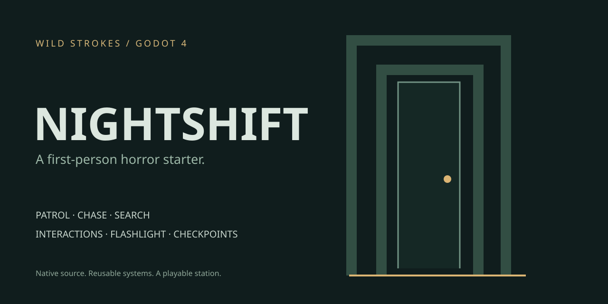

It hears you running.
Patrol, chase and search states. Wall-occluded sight, sprint detection and grid routes around the station.
01 / NATIVE GODOT 4 PROJECT
The station closed an hour ago. You are still inside.
A playable horror starter built around systems you can reuse.
Desktop keyboard + mouse · Godot 4.4.1 · Original procedural geometry and sound. Download and open in Godot; this page is the project overview.

Patrol, chase and search states. Wall-occluded sight, sprint detection and grid routes around the station.
Read notes, collect a brass key, recharge your flashlight and unlock the exit with camera-ray interactions.
Validated checkpoints restore your location, key and flashlight. Pause, retry and finish a complete shift.
GET INTO THE STATION
project.godot in Godot 4.4.1.CODE YOU CAN INSPECT
Movement, AI, interactions, layout, save storage, UI, sound and orchestration live in separate scripts. The integration guide explains collision layers, tuning and adapting each system to your own scenes.
This release is a single-player Godot starter with procedural placeholder visuals. UE5 requires a separate native implementation. Headless engine import and gameplay integration checks passed; graphical playthrough and exported builds have not been verified in this environment.